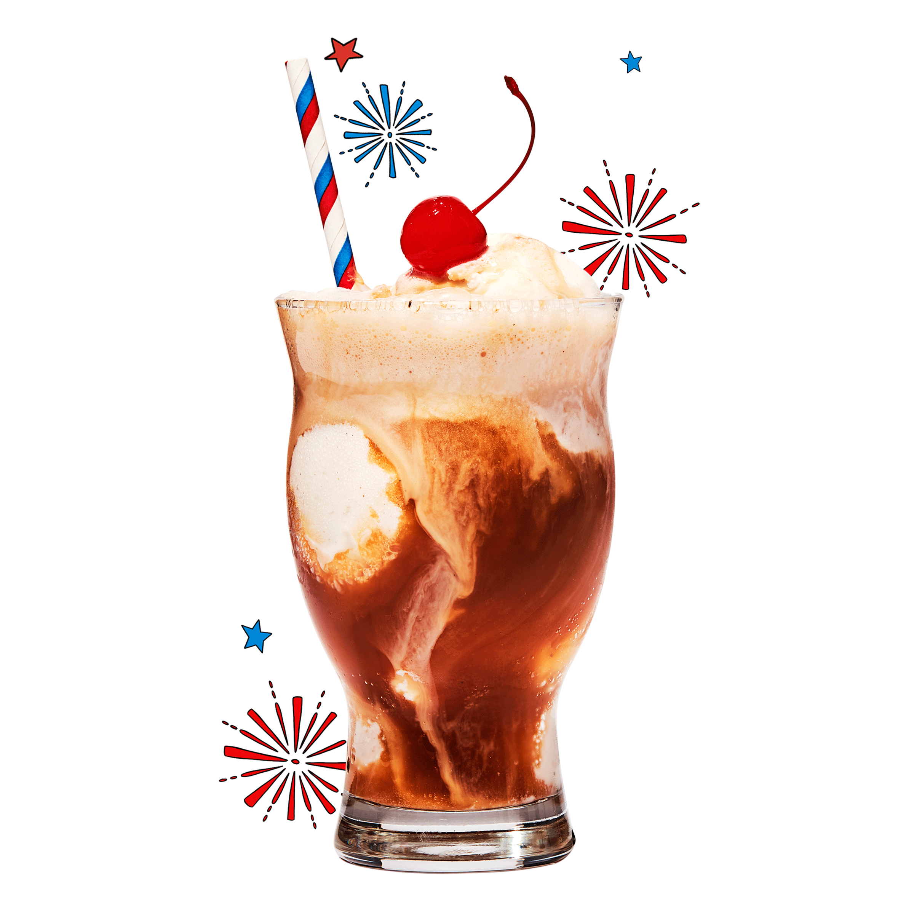
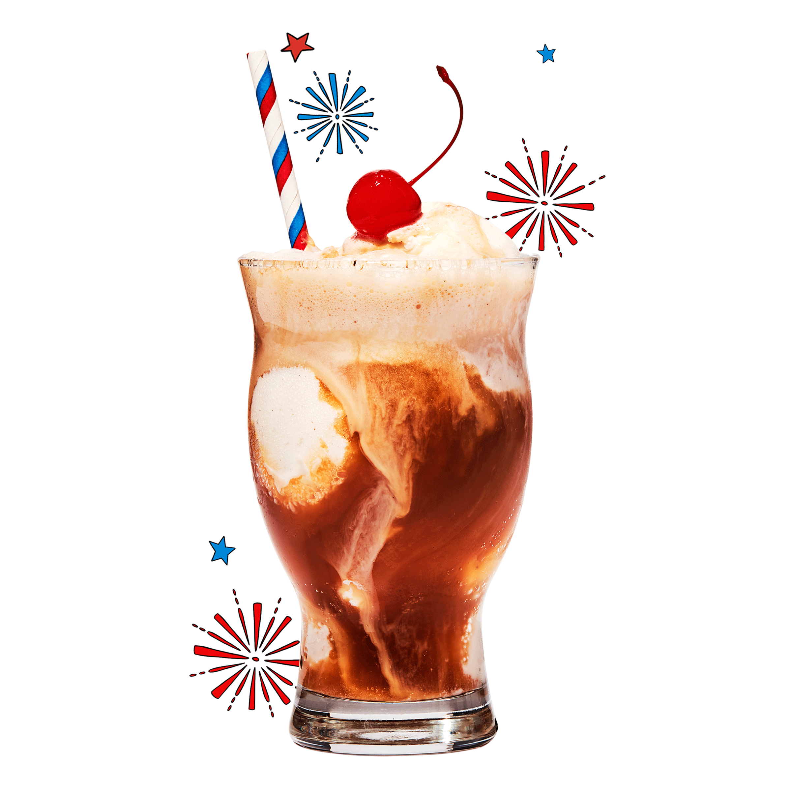

Reader's Digest
Editorial & Digital Design
Print Design
For half of my internship I worked on the print team designing department pages, pitching ideas and illustrators for feature stories, and assisting with photo research. The main department sections I designed were Best Pet Pals, Where Oh Where, Humor sections, and Brain Games.

Digital Design
The other half of my internship I spent working with the fast-paced digital team producing daily content for Trusted Media Brands (RD's parent company). I did photo research, digital photo collages, and motion graphics for multiple TMB brands like RD.com, The Family Handyman, and Taste of Home. Here is a selection of my favorites.
Designs and Photo Collages


Animations/Motion Graphics

 

Print Design
The bulk of my time I spent collaborating with photo editors and other designers to come up with well-executed editorial pieces. NGM is all about it's incredible photography, my job was to make designs that let the photos shine. Deliberate typography and careful pacing were the key to successful storytelling.


Web Design
Another major role as an intern was to convert print designs to digital articles for the online magazine using National Geographic's content management system. I also had the chance to team up with the graphics team to make a print-to-web graphic conversion (original print and my conversion shown below) that is optimized for multiple screen sizes.

View all of the digital articles I put together here:
See how volcanoes spark lightning storms
The dreamlike fungi that thrive in nature’s damp corners
Don’t let the pandemic rob us of joyful traditions
Bluer blues and blacker blacks? How science is enhancing colors
What New Orleans lost when a beloved community member fell to COVID-19
Are we ‘Generation Screwed’? Not necessarily
2020 has tested our humanity. Where do we go from here?
Mobile Storytelling
In the last few weeks of my internship, I also had the opportunity to work with the mobile storytelling team. I was asked to utilize my Premiere Pro and After Effects skills to create the December "table of contents" Instagram Story which highlights that month's magazine feature stories and curated list of digital stories for the @natgeo account. It ended up driving over 38,000 unique visitors to the Nat Geo website, 5x the average traffic generated, making it the top performing table of contents IG story for the year. In the future, I would love the chance to work on videos like this and expand my mobile storytelling skills.
Over the last few years I have delved into the world of design. Since then I have had the opportunity to work in a variety of spaces creating content for both print and web. Here is a collection of some of my favorite creations.
The final exploration of design was creating this website. Coding this portfolio was my first dive into web devolopment and allowed me to practice html, css and javascript as well as UI and UX skills.
Let's get in touch! Contact